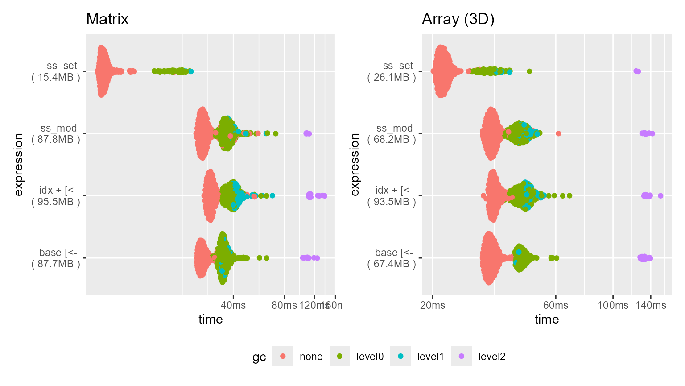
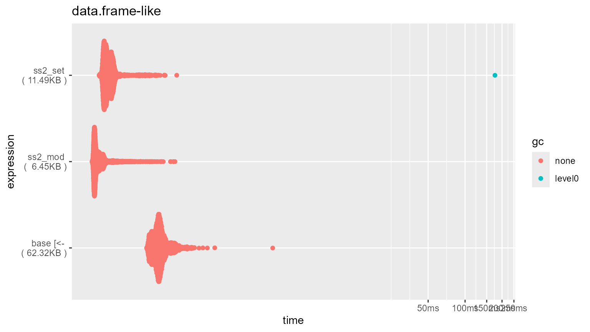

Benchmarks - transform operations
Source:vignettes/articles/b_benchmarks_tf.Rmd
b_benchmarks_tf.Rmd
library(squarebrackets)
#> Run `?squarebrackets::squarebrackets_help` to open the introduction help page of 'squarebrackets'.
Introduction
Base R’s [<-, [[<-,
$<- methods perform in-place modification on subsets of
objects using “copy-on-modify” semantics. The ‘squarebrackets’ R-package
provides 2 alternative semantics for modification: “pass-by-reference”
through the *_set methods, and “pass-by-value” through the
*_mod methods. Moreover, where base ‘R’ provides direct
replacement only, ‘squarebrackets’ provides both replacement (through
the rp argument) and transformation (through the
tf argument) mechanics. Thus, ‘squarebrackets’ and base R
are not really directly comparable in terms of benchmarking.
Nonetheless, I have tried to keep the comparisons somewhat fair.
The *_set methods are generally several times (2 to 5
times) faster than base R’s in-place modification, and generally uses
about half the memory. The *_mod methods are generally
about as fast as base R’s in-place modification, and uses about the same
amount of memory.
Below are some benchmarks to give one an idea of the speed loss.
These are just examples; speed is determined by a great number of
factors. To keep comparisons between the classes fair, all objects have
approximately 1e7 elements.
library(bench)
library(ggplot2)
library(patchwork)
library(tinycodet)
#> Run `?tinycodet::tinycodet` to open the introduction help page of 'tinycodet'.
plotfun <- function(title1, bm1, title2, bm2) {
plotdat1 <- bm1 |> tidyr::unnest(cols = c("time", "gc", "mem_alloc"))
plotdat1$expression <- paste(
plotdat1$expression,
"\n (", as.character(plotdat1$mem_alloc), ")"
)
p1 <- ggplot(plotdat1, aes_pro(x = ~ time, y = ~ expression, color = ~ gc)) +
ggbeeswarm::geom_quasirandom() + ggtitle(title1)
plotdat2 <- bm2 |> tidyr::unnest(cols = c("time", "gc", "mem_alloc"))
plotdat2$expression <- paste(
plotdat2$expression,
"\n (", as.character(plotdat2$mem_alloc), ")"
)
p2 <- ggplot(plotdat2, aes_pro(x = ~ time, y = ~ expression, color = ~ gc)) +
ggbeeswarm::geom_quasirandom() + ggtitle(title2)
combined <- p1 + p2 & theme(legend.position = "bottom")
combined + plot_layout(guides = "collect")
}Atomic objects
Matrix
n <- 3162 # approx sqrt(1e7)
x.mat <- matrix(seq_len(n*n), ncol = n)
x.mat2 <- as.mutable_atomic(x.mat)
colnames(x.mat) <- sample(c(letters, LETTERS, NA), n, TRUE)
sel.rows <- 1:1000
sel.cols <- 1:1000
basefun <- function(x, rows, cols, tf) {
x[rows, cols] <- tf(x[rows, cols])
return(x)
}
base_plus_idx <- function(x, rows, cols, tf) {
x[idx(x, n(rows, cols), 1:2)] <- tf(x[idx(x, n(rows, cols), 1:2)])
return(x)
}
tf <- function(x) { return(-1 * x) }
bm.sb_tf.matrix <- bench::mark(
"base [<-" = basefun(x.mat, sel.rows, sel.cols, tf = tf),
"idx + [<-" = base_plus_idx(x.mat, sel.rows, sel.cols, tf = tf),
"ss_set" = ss_set(x.mat2, n(sel.rows, sel.cols), tf = tf),
"ss_mod" = ss_mod(x.mat, n(sel.rows, sel.cols), tf = tf),
check = FALSE,
min_iterations = 500
)
bm.sb_tf.matrix
summary(bm.sb_tf.matrix)#> # A tibble: 4 × 6
#> expression min median `itr/sec` mem_alloc `gc/sec`
#> <bch:expr> <bch:tm> <bch:tm> <dbl> <bch:byt> <dbl>
#> 1 base [<- 24.37ms 26.07ms 37.6 87.7MB 51.1
#> 2 idx + [<- 26.88ms 29.35ms 33.4 95.5MB 32.6
#> 3 ss_set 6.31ms 6.87ms 142. 15.4MB 11.7
#> 4 ss_mod 24.1ms 26.51ms 36.7 87.8MB 30.8
Array (3D)
x.dims <- c(1900, 1900, 3) # leads to approx 1e7 elements
x.3d <- array(1:prod(x.dims), x.dims)
x.3d2 <- as.mutable_atomic(x.3d)
sel.rows <- 1:900
sel.lyrs <- c(TRUE, FALSE, TRUE)
basefun <- function(x, rows, lyrs, tf) {
x[rows, , lyrs] <- tf(x[rows, , lyrs])
return(x)
}
base_plus_idx <- function(x, rows, lyrs, tf) {
x[idx(x, n(rows, lyrs), c(1, 3))] <- tf(x[idx(x, n(rows, lyrs), c(1, 3))])
return(x)
}
tf <- function(x) { return(-1 * x) }
bm.sb_tf.3d <- bench::mark(
"base [<-" = basefun(x.3d, sel.rows, sel.lyrs, tf = tf ),
"idx + [<-" = base_plus_idx(x.3d, sel.rows, sel.lyrs, tf = tf),
"ss_set" = ss_set(x.3d2, n(sel.rows, sel.lyrs), c(1,3), tf = tf),
"ss_mod" = ss_mod(x.3d, n(sel.rows, sel.lyrs), c(1, 3), tf = tf),
check = FALSE,
min_iterations = 500
)
summary(bm.sb_tf.3d)#> # A tibble: 4 × 6
#> expression min median `itr/sec` mem_alloc `gc/sec`
#> <bch:expr> <bch:tm> <bch:tm> <dbl> <bch:byt> <dbl>
#> 1 base [<- 31.2ms 33.3ms 29.7 67.4MB 14.8
#> 2 idx + [<- 31.5ms 34.4ms 28.6 93.5MB 27.5
#> 3 ss_set 20.1ms 21.9ms 45.2 26.1MB 7.36
#> 4 ss_mod 31.3ms 33.9ms 29.3 68.2MB 18.9
Plot
#> Warning: The `trans` argument of `continuous_scale()` is deprecated as of ggplot2 3.5.0.
#> ℹ Please use the `transform` argument instead.
#> This warning is displayed once every 8 hours.
#> Call `lifecycle::last_lifecycle_warnings()` to see where this warning was
#> generated.
#> Orientation inferred to be along y-axis; override with
#> `position_quasirandom(orientation = 'x')`
#> Orientation inferred to be along y-axis; override with
#> `position_quasirandom(orientation = 'x')`
Data.frame-like
n <- 1e5
ncol <- 200 # times 2
chrmat <- matrix(
sample(letters, n*ncol, replace = TRUE), ncol = ncol
)
intmat <- matrix(
seq.int(n*ncol), ncol = ncol
)
df <- cbind(chrmat, intmat) |> as.data.frame()
colnames(df) <- make.names(colnames(df), unique = TRUE)
dt <- data.table::as.data.table(df)
rm(list = c("chrmat", "intmat"))
sel.rows <- 1:1000
basefun <- function(x, rows, tf) {
x[rows, sapply(x, is.numeric)] <- lapply(x[rows, sapply(x, is.numeric)], tf)
return(x)
}
gc()
bm.sb_tf.df <- bench::mark(
"base [<-" = basefun(df, sel.rows, tf = \(x) -1 * x),
"sbt_set" = sbt_set(
dt, obs = sel.rows, vars = is.numeric, tf = \(x) -1 * x
),
"sbt_mod" = sbt_mod(
df, obs = sel.rows, vars = is.numeric, tf = \(x) -1 * x
),
check = FALSE,
min_iterations = 500
)#> # A tibble: 3 × 6
#> expression min median `itr/sec` mem_alloc `gc/sec`
#> <bch:expr> <bch:tm> <bch:tm> <dbl> <bch:byt> <dbl>
#> 1 base [<- 226µs 288µs 3229. 62.3KB 0
#> 2 sbt_set 112µs 149µs 6239. 120.8KB 0
#> 3 sbt_mod 113µs 171µs 5517. 41.3KB 0
#> Orientation inferred to be along y-axis; override with
#> `position_quasirandom(orientation = 'x')`